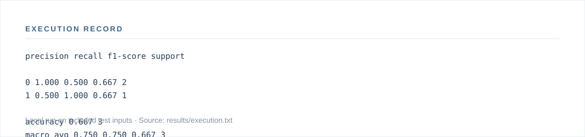

Project 016 / 100 · Foundations · Cybersecurity, Privacy & Abuse Defense
Email Phishing Classifier
A defensive NLP baseline for classifying email text as likely phishing or legitimate. It uses TF-IDF features and logistic regression and can display the strongest contributing terms.
Open-source research engineering portfolio · Source and replication instructions are included.
01 / Research problem
Research question
What is the performance of simple text classifiers on clearly labeled phishing email samples?
Current capabilities
- Defensive email NLP classifier
02 / System design
Implementation overview
A concise structural view of the code and inputs; not a production deployment diagram.
flowchart LR
A["emails.csv"] --> B["Processing modules"]
B --> C["Console / application output"]
B -.-> M0["predict.py"]
B -.-> M1["train.py"]
03 / Execution
Observed results
Local execution against bundled fixtures. Numbers are outputs of the software, not real-world effectiveness claims.

View execution transcript
$ python src/train.py sample/emails.csv --model outputs/model.joblib
precision recall f1-score support
0 1.000 0.500 0.667 2
1 0.500 1.000 0.667 1
accuracy 0.667 3
macro avg 0.750 0.750 0.667 3
weighted avg 0.833 0.667 0.667 3
saved outputs/model.joblib
$ python src/predict.py outputs/model.joblib "Urgent: verify your account immediately"
{'phishing_probability': 0.5776, 'predicted_label': 1, 'top_phishing_terms': [{'term': 'verify', 'contribution': 0.052}, {'term': 'urgent', 'contribution': 0.0353}, {'term': 'verify your', 'contribution': 0.0353}, {'term': 'urgent verify', 'contribution': 0.0353}, {'term': 'immediately', 'contribution': 0.0353}]}
04 / Reproduction
Run the implementation
Use Python 3.11+ with dependencies declared in the root repository.
python src/train.py sample/emails.csv --model outputs/model.joblib python src/predict.py outputs/model.joblib "Urgent: verify your account immediately"
See the research brief for evaluation design and limitations.